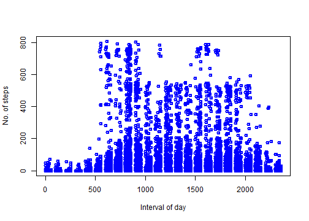

During the Reproducible Research class of the Data Science track, the class project involved data gathered by a personal activity tracking device.
The device recorded the number of steps the research subject took in each five-minute interval of the day for 61 days.
For example, this plot shows the unedited data for all days:
actdata <- read.csv("activity.csv")
plot(actdata$interval, actdata$steps, col = "blue", lwd = 2, ylab = "No. of steps",
xlab = "Interval of day")
